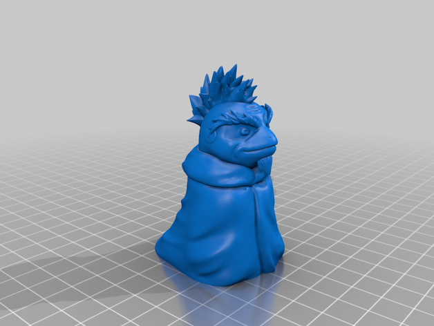
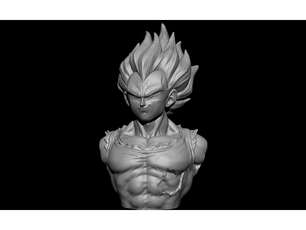
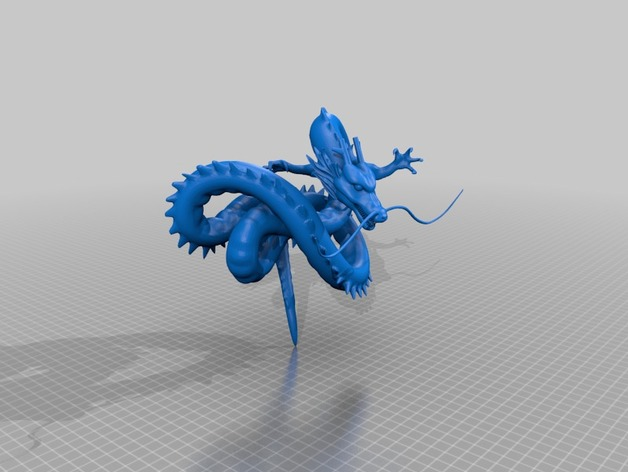
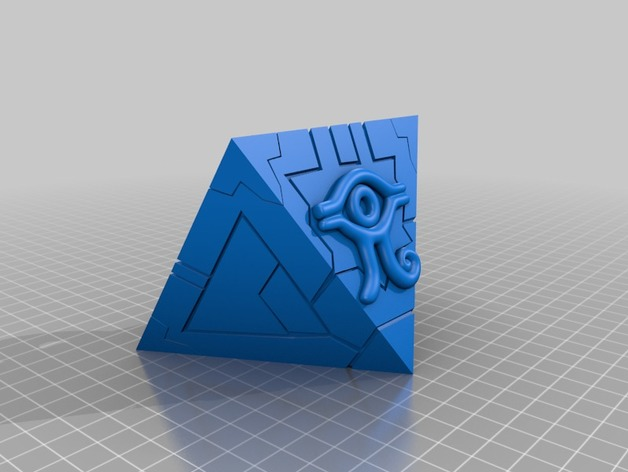

Snipers Air Soft
Airsoft Sniper L96 M59A Double Eagle
R$1.067,11 à vista
L96 Airsoft Sniper AWP é na Loja da Carabina! Este Modelo L96 M59A da marca Double Eagle, no calibre 6mm, possui trilho superior de 20mm, permitido a utilização da Luneta, trilho inferior frontal de 20mm, permitindo utilização de bipé na mesma, engatilhamento através do sistema Bolt Action, permitindo tiros precisos.
Airsoft Sniper M52 Double Eagle
R$586,51 à vista
Sniper Airsoft M52 Double Eagle com engatilhamento por ferrolho lateral. Sniper de entrada indicada para iniciantes no esporte.
Airsoft Sniper a Gás G86B Green Gás Well
R$2.277,51 à vista
Sniper Airsoft inspirada no Rifle Sniper de Guerra PGM 338 é um Lindo Rifle Airsoft com cerca de 430fps* que acompanha um bipé em metal, além de bandoleira para facilitar o transporte. Também acompanha Speedloader, magazine de 15 rounds.
Airsoft Sniper Barrett M82A1 .50 Desert Galaxy

R$2.223,07 à vista
Sniper Airsoft .50 M82A1 G31 Galaxy, excelente desempenho com alta precisão e resistência! Acompanha bipé, oferecendo maior estabilidade para os disparos. Um trilho 22mm de 56cm de comprimento, permitindo instalação de uma luneta, auxiliando nos disparos de longa distancia. Um sniper muito linda, feita para os amantes de Sniper!
Airsoft Sniper Kar98k Green Gás Evo
R$3.070,50 à vista
Sniper Kar98 Evo é uma réplica da Famosa Kar98k adotada em 1935 como fuzil padrão da infantaria do Wehrmacht da Alemanha Nazi, conhecido por sua precisão e alcance efetivo. Essa Sniper Airsoft é fabricada em escala 1:1 do Fuzil de fogo e tem um incrível realismo a cada disparo. Coronha em madeira com engatilhamento por ferrolho lateral na cor prata, utiliza cápsulas pratas para inserir a BBs e a cápsulas são ejetadas a cada disparo efetuado.